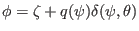
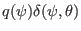
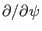
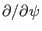

Noting the simple fact that
where is a constant, we conclude that
(since
, where the part
 acts as a constant when we hold  and
and
 constant), i.e., the symmetry property with respect to the new
toroidal angle
constant), i.e., the symmetry property with respect to the new
toroidal angle  is identical with the one with respect to the old
toroidal angle
is identical with the one with respect to the old
toroidal angle  . On the other hand, generally we have
. On the other hand, generally we have
and
In the special case that is axisymmetric (i.e., is independent of
in
 coordinates), then two sides of Eqs.
(253) and (254) are equal to each other. Note that the
partial derivatives
 and
coordinates), then two sides of Eqs.
(253) and (254) are equal to each other. Note that the
partial derivatives
 and
 in Sec. 7.1 and 7.2 are taken in
coordinates. Because the quantities involved in Sec. 7.1 and
7.2 are axisymmetric, these partial derivatives are equal to their
counterparts in
in Sec. 7.1 and 7.2 are taken in
coordinates. Because the quantities involved in Sec. 7.1 and
7.2 are axisymmetric, these partial derivatives are equal to their
counterparts in
 coordinates.
coordinates.
yj
2018-03-09